AnyPortrait > Manual > Universal Render Pipeline
Universal Render Pipeline
1.4.7
Universal Render Pipeline (URP) is a new rendering method introduced in Unity 2019.3.
URP replaces LWRP and supports more platforms and devices, and can be applied to various projects such as 2D, 3D, VR and AR.
We recommend that you refer to the following pages for further explanation.
- Material Library
- Creating Materials with Shader Graph
- Custom Shader
- About the Universal Render Pipeline Manual
Setting Up the Universal Render Pipeline and Changing Materials

Run "Window > Package Manager".
(The location or name of the menu may vary depending on your version of Unity.)

(1) Select the "Universal RP" package.
If you don't see the package in the list, it may take a while to load, so wait a moment.
(2) Press the Install button.
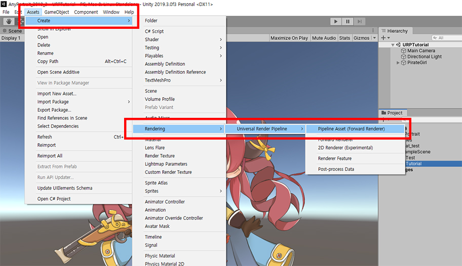
Once the URP package is installed, you need to create a Pipeline Asset and apply it to the rendering.
Right-click within the Assets folder or select from the Assets menu, and select "Create > Rendering > Universal Render Pipeline > Pipeline Asset (Forward Renderer)" .
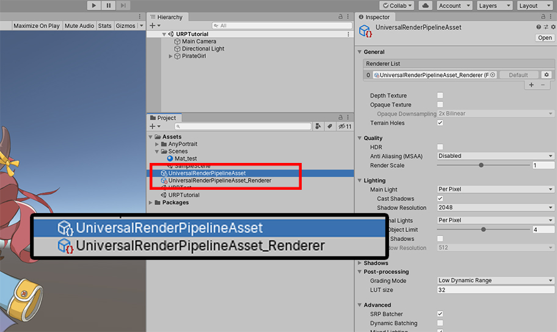
"UniversalRenderPipelineAsset" is created.
Also "Default Renderer Asset" is created that defines how to render in URP.

Let's apply the generated URP Asset to the project.
(1) Open "Edit > Project Settings" in the Unity Editor Menu and select the Graphics item.
(2) Assign the "UniversalRenderPipelineAsset" created above to the "Scriptable Render Pipeline Settings" item.
Now it's rendered in URP, probably because most materials won't render properly.

Let's install and apply a material that supports URP.
(1) Open AnyPortrait Editor and select one of the Root Units.
(2) Press the Material Library button.
(3) Select the package you want to install. In this case, select the URP Presets package.
(4) With URP Presets selected, press the Unpack Preset button.
If you are using Unity 2021 or later, please install URP (2021) Presets added in AnyPortrait v1.3.5.
This preset includes all the functions of the existing URP presets and was developed for compatibility with Unity 2021.
Additional descriptions of these presets are located at the bottom of this page.
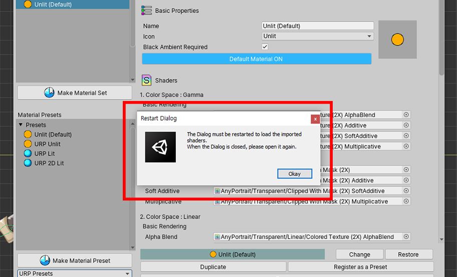
Once the package is installed, you need to run the Material Library again.
Press the OK button and press the Material Library button to open it again.

Three material presets with URP support have been added.
- URP Unlit : This is the material that renders the original color without lighting in URP environment.
- URP Lit : This is the material to which lighting is applied in URP environment.
- URP 2D Lit : This material is applied by 2D Light in URP environment with 2D Renderer.
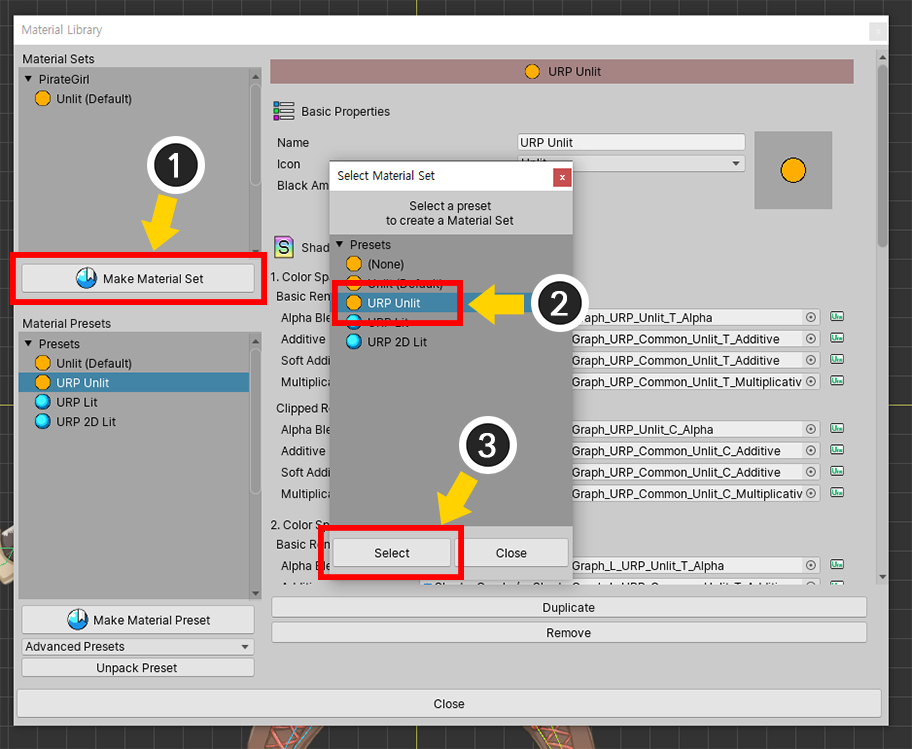
Let's create a material set with the added material presets.
(1) Press the Make Material Set button.
(2) Select one of the URP presets. In this step, select the URP Unlit preset.
(3) Press the Select button.

(1) Select the created URP Unlit material set.
(2) Press the Default Material button to set it as the default material.

Because clipping masks are rendered differently in LWRP and URP, you need to do additional work in Bake setup.
(1) Press the Bake button.
(2) Select the Setting tab.
(3) Change the value of the Render Pipeline item to "Scriptable Render Pipeline".

(1) Select the Bake tab.
(2) Press the Bake button.

If you look at the character in the Unity scene, you can see that they now render correctly in the URP environment.
Applying URP Lit Material
You can apply URP Lit materials to make the character be rendered with lights.

Open the Material Library.
(1) Press the Make Material Set button.
(2) Select the "URP Lit" preset and (3) press the Select button.

(1) Select the created URP Lit material set.
(2) Press the Default Material button to set it as the default material.
When you're done, close the Material Library.

Run Bake and see it in the Unity scene.

Unlike the Unlit material, the character will be a bit darker than the image above, or it will be black.
This is because Lit materials are dark without light.
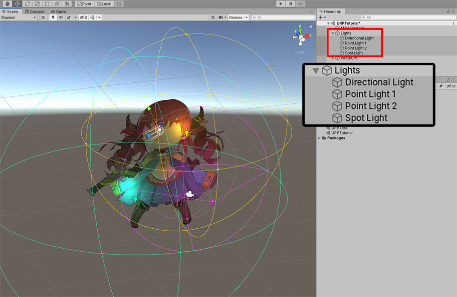
Let's add various kinds of Light objects.

When you run the game, you will see a lighted character.
Rendering in URP with the 2D Renderer
URP is a way to include the features of LWRP 2D.
You can simply apply the 2D Renderer to switch to the rendering method using 2D Lights.
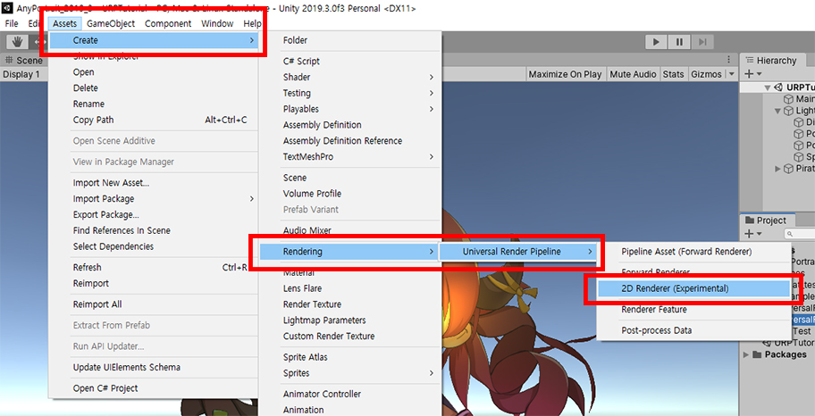
Create a 2D Renderer asset.
Right click on the Assets menu or the Assets folder,
Select "Create > Rendering > Universal Renderer Pipeline > 2D Renderer (Experimental)".
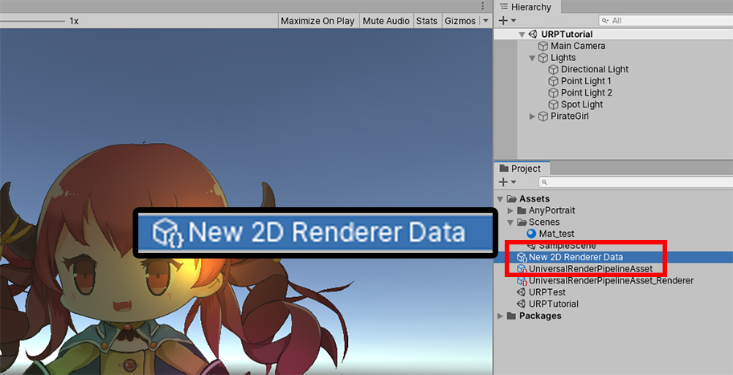
New 2D Renderer Asset (New 2D Renderer Data) is created.
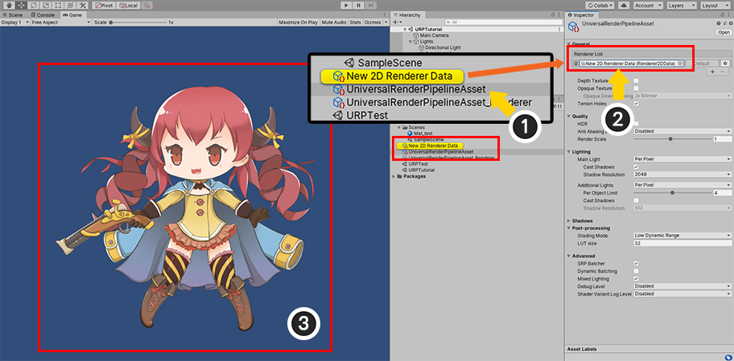
(1) Select the "UniversalRenderPipelineAsset" created earlier.
(2) Assign "2D Renderer (New 2D Renderer Data)" to the items of the Renderer List.
(3) The lighting is not applied to the characters in the Unity scene since the material for the 2D Renderer has not yet been applied.
Let's set up a material for URP 2D.

It is almost same to the method described above.
(1) Open the Material Library and press the Make Material Set button.
(2) This time, select "URP 2D Lit" preset and (3) press Select button.
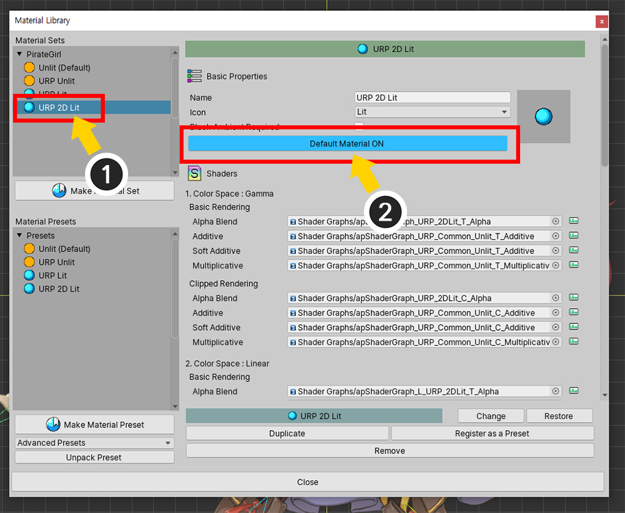
(1) Select the created URP 2D Lit material set and (2) press the Default Material button to set it as the default material.
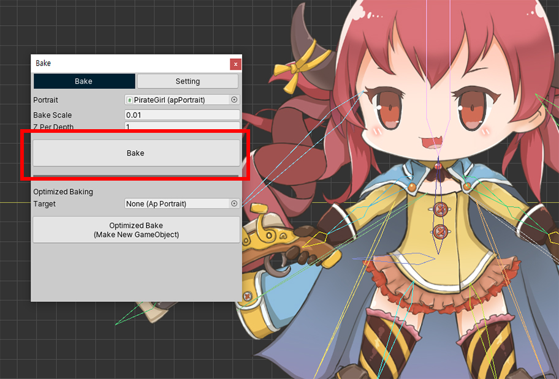
Run Bake and see it in the Unity scene.
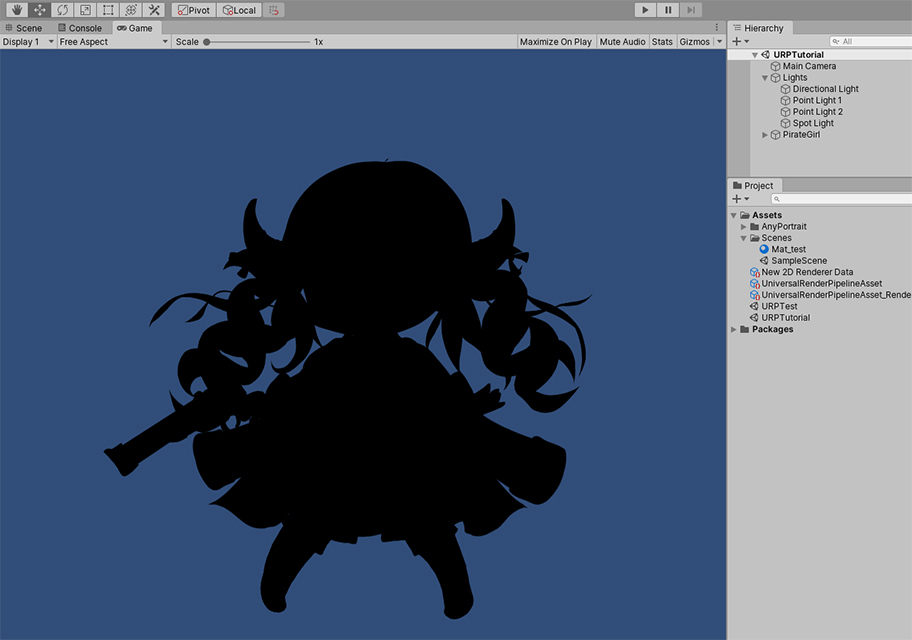
As it is a Lit material, the character looks dark in a scene without light.
Currently basic Light objects are placed, but separate Light objects for the 2D Renderer are needed.
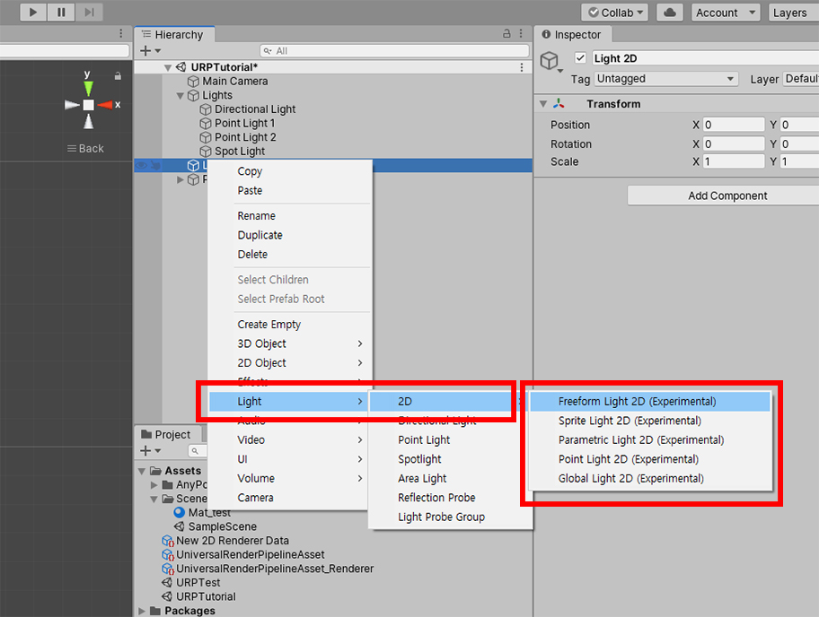
Add a 2D Light object.
In the "Light > 2D" category, there are 2D lights of the kind supported by the 2D Renderer.
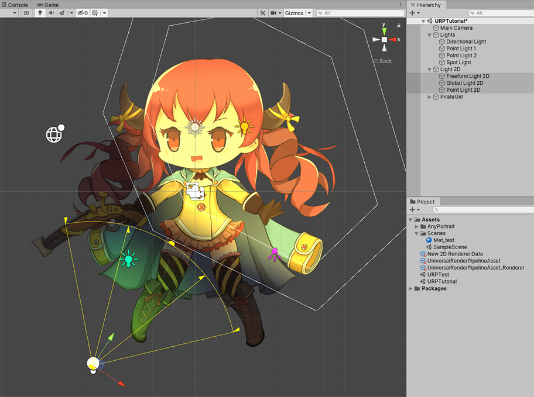
Place 2D Lights to the scene.

You can see the beautifully rendered character in the URP 2D environment.
Shader Graph assets with URP support

When the URP Presets package is installed from the Material Library, shader assets that support URP are added as shown above.
(Assets > AnyPortrait > Assets > Shaders > Advanced folder)
These assets are created by Shader Graph.

Open these assets to see the contents of the Shader Graph.
Materials provided as presets only perform basic lighting.
Create your Shader Graph based on this asset and apply various rendering techniques.
Cautions for using URP materials
URP is a new feature introduced in the latest version of Unity 2019.3.
URP has many advantages in rendering, but there is a big problem with incompatibility.
Therefore, unlike the previous version of AnyPortrait, URP materials are provided in the form of Shader Graph.
However, please note the following limitations due to the limitation of the function of Shader Graph.
1) Soft Additive is not supported. Instead, Additive's Shader also applies to Soft Additives.
2) Multiplicative method of mesh blend method is calculated as Multiply method, not 2X Multiply.
3) In URP 2D Lit, Additive (Soft Additive) and Multiplicative materials are not affected by light.
URP (2021) presets supporting Unity 2021 and newer versions
1.3.5
In Unity 2021 and earlier, many features of the URP were "experimental".
And starting with Unity 2021, some changes have been made as these become full features.
Unfortunately, due to this change, the existing URP material presets provided by AnyPortrait did not work properly.
Let's solve the problem by using the "URP (2021)" preset added in AnyPortrait v1.3.5, and also use an additional material.
This material preset works in Unity 2021 and 2022.a.

The method of installing a new URP preset is the same as before.
(1) Open the Material Library.
(2) Click the list of preset packages.
(r) Select the "URP (2021) Presets".

(1) With “URP (2021) Presets” selected, press the Unpack Preset button.
(2) An installation message appears. Press the Okay button.

If you open the material library again, you can see that the material presets included in URP (2021) are installed.
Each of the presets are as follows.
1. URP (2021) Unlit : A basic material that is not affected by light.
2. URP (2021) Lit : A material affected by light in URP's default renderer.
3. URP (2021) Bumped Lit : A material to which normal maps (or bump maps) can be applied in URP's default renderer.
4. URP (2021) 2D Lit : A material affected by light in URP's 2D renderer.
5. URP (2021) 2D Bumped Lit : A material to which normal maps (or bump maps) can be applied in URP's 2D renderer.
6. URP (2021) Mergeable Unlit : A unlit material that allows material merging in the URP.
7. URP (2021) Mergeable 2D Lit : A light-affected material that allows material merging in URP's 2D renderer.
Note
For Mergeable presets, refer to the related page.
Most material presets behave almost identically to previous URP presets.
Unlit, Lit, 2D Lit Presets are the same as before.
If you have read the description above, the basic usage and materials added in the URP (2021) package are explained below.
First, let's apply the Unlit material.
(1) Click the Make Material Set button.
(2) Select URP (2021) Unlit.
(1) Select the added Material Set.
(2) Press the Default Material button and set it to ON.
(1) Open the Bake dialog.
(2) Select the Setting tab.
(3) Change the value of the Render Pipeline option to Scriptable Render Pipeline.
(1) When all settings are complete, execute Bake.

As you can see above, it renders normally in the URP environment.

If you want to use a material affected by light rather than Unlit, you need to use a different material according to the Renderer like the previous version of the URP.
URP performs rendering by selecting one of the two types of Renderer as above.
We will explain how to use the newly added Bumped Lit material for each Renderer.
First of all, we will tell you how to use the Bumped Lit material in an environment using the 2D Renderer (aka URP 2D).

(1) Click the Make Material Set button.
(2) In the URP 2D environment, URP (2021) 2D Lit or URP (2021) 2D Bumped Lit can be used. In this page, we will use URP (2021 2D Bumped Lit).

(1) Select the added Material Set.
(2) Enable Default Material to ON.

This material set has an added attribute called "_BumpMap".
(1) Assign normal maps for each image.
Bake and return to the Unity scene.
In order to check the normal map, we need to add a light.
(1) Right-click in Hierarchy.
(2) Light 2D objects are displayed in Light. First, let's select Global Light 2D and add it.

(1) Select the added Light 2D and change the color.
(2) You can see the character is rendered to match the color of the light.

Next, let's check the volume by the normal map.
(1) Add Spot Light 2D with directionality.
(1) Place the light and set the range and direction.
(2) Set the color of the light.
(3) Change the value of the Quality option of Normal Maps to Fast or Accurate.

You can see the character being rendered with volume by the normal map.

Let's compare it with the rendering result of the 2D Lit material preset.
Depending on the material, you can see that the rendering result is different.
Next, let's set the material in the environment where Universal Renderer is set instead of 2D Renderer.

(1) Click the Make Material Set button.
(2) URP (2021) Lit or URP (2021) Bumped Lit can be selected. Let's select URP (2021) Bumped Lit here.
The rest of the process is the same.
Set the created material set as the default material, specify a normal map, and then execute Bake.

Unlike URP 2D, you can use the commonly used lights such as Directional Light or Point Light.
Please place the lights appropriately in the scene.

You can see the same rendering result with the normal map applied.
Clipped mesh issues when rendering with Perspective camera
In URP, it is also possible to render characters at a 3D level using a 3D camera, that is, a "Perspective camera".
This is because the "Billboard" function also works in URP. (Related Page)
However, when switching to a perspective camera, the "Clipped mesh" has some rendering problems.
This is a screen rendered with a perspective camera using the billboard option in the URP environment.
The clipped mesh for the eyes looks a bit blurry.
This is due to the resolution of the render texture for clipping rendering.
AnyPortrait has the ability to perform high-quality clipping rendering with a low-resolution render texture.
However, in the case of URP, this function only works properly with Orthographic cameras.
Therefore, if you are rendering with a perspective camera, you need to increase the quality of the clipping mesh purely by increasing the "Render Texture Resolution".

(1) Select a Mesh Group.
(2) Select the mesh that will become the Clipping Mask. (In the case above, we select the "EyeWhite" mesh.)
(3) Change the Mask Texture Size option. This option is the resolution of the render texture for clipping rendering. The larger the value, the better the quality of the clipping rendering. Here we selected "512".
Let’s run Bake and check again.
You can see that the problem of blurry eyes with the clipping mesh has almost solved.